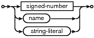

Choose any three.
|
|
The PRAGMA statement is a SQL extension specific to SQLite and used to modify the operation of the SQLite library or to query the SQLite library for internal (non-table) data. The PRAGMA statement is issued using the same interface as other SQLite commands (e.g. SELECT, INSERT) but is different in the following important respects:
- Specific pragma statements may be removed and others added in future releases of SQLite. There is no guarantee of backwards compatiblity.
- No error messages are generated if an unknown pragma is issued. Unknown pragmas are simply ignored. This means if there is a typo in a pragma statement the library does not inform the user of the fact.
- Some pragmas take effect during the SQL compilation stage, not the execution stage. This means if using the C-language sqlite3_prepare(), sqlite3_step(), sqlite3_finalize() API (or similar in a wrapper interface), the pragma may run during the sqlite3_prepare() call, not during the sqlite3_step() call as normal SQL statements do. Or the pragma might run during sqlite3_step() just like normal SQL statements. Whether or not the pragma runs during sqlite3_prepare() or sqlite3_step() depends on the pragma and on the specific release of SQLite.
- The pragma command is specific to SQLite and is very unlikely to be compatible with any other SQL database engine.
The available pragmas fall into four basic categories:
- Pragmas used to modify the operation of the SQLite library in some manner, or to query for the current mode of operation.
- Pragmas used to query the schema of the current database.
- Pragmas used to query or modify the two version counters stored in the database: the schema-version and the user-version.
- Pragmas used to debug the library and verify that database files are not corrupted.
PRAGMA command syntax
pragma-stmt:

pragma-value:

A pragma can take either zero or one argument. The argument is may be either in parentheses or it may be separated from the pragma name by an equal sign. The two syntaxes yield identical results. In many pragmas, the argument is a boolean. The boolean can be one of:
0 no false off
Keyword arguments can optionally appear in quotes. (Example: 'yes' [FALSE].) Some pragmas takes a string literal as their argument. When pragma takes a keyword argument, it will usually also take a numeric equivalent as well. For example, "0" and "no" mean the same thing, as does "1" and "yes". When querying the value of a setting, many pragmas return the number rather than the keyword.
A pragma may have an optional database name before the pragma name. The database name is the name of an ATTACH-ed database or it can be "main" or "temp" for the main and the TEMP databases. If the optional database name is omitted, "main" is assumed. In some pragmas, the database name is meaningless and is simply ignored.
Pragmas to modify library operation
PRAGMA auto_vacuum;
PRAGMA auto_vacuum = 0 | NONE | 1 | FULL | 2 | INCREMENTAL;Query or set the auto-vacuum status in the database.
The default setting for auto-vacuum is 0 or "none", unless the SQLITE_DEFAULT_AUTOVACUUM compile-time option is used. The "none" setting means that auto-vacuum is disabled. When auto-vacuum is disabled and data is deleted data from a database, the database file remains the same size. Unused database file pages are added to a "freelist" and reused for subsequent inserts. So no database file space is lost. However, the database file does not shrink. In this mode the VACUUM command can be used to rebuild the entire database file and thus reclaim unused disk space.
When the auto-vacuum mode is 1 or "full", the freelist pages are moved to the end of the database file and the database file is truncated to remove the freelist pages at every transaction commit. Note, however, that auto-vacuum only truncates the freelist pages from the file. Auto-vacuum does not defragment the database nor repack individual database pages the way that the VACUUM command does. In fact, because it moves pages around within the file, auto-vacuum can actually make fragmentation worse.
Auto-vacuuming is only possible if the database stores some additional information that allows each database page to be traced backwards to its referer. Therefore, auto-vacuuming must be turned on before any tables are created. It is not possible to enable or disable auto-vacuum after a table has been created.
When the value of auto-vacuum is 2 or "incremental" then the additional information needed to do auto-vacuuming is stored in the database file but auto-vacuuming does not occur automatically at each commit as it does with auto_vacuum=full. In incremental mode, the separate incremental_vacuum pragma must be invoked to cause the auto-vacuum to occur.
The database connection can be changed between full and incremental autovacuum mode at any time. However, changing from "none" to "full" or "incremental" when the database is new (no tables have yet been created) or by running the VACUUM command. To change auto-vacuum modes, first use the auto_vacuum pragma to set the new desired mode, then invoke the VACUUM command to reorganize the entire database file. To change from "full" or "incremental" back to "none" always requires running VACUUM even on an empty database.
When the auto_vacuum pragma is invoked with no arguments, it returns the current auto_vacuum mode.
PRAGMA cache_size;
PRAGMA cache_size = Number-of-pages;Query or change the suggested maximum number of database disk pages that SQLite will hold in memory at once per open database file. Whether or not this suggestion is honored is at the discretion of the Application Defined Page Cache. In the default page cache implemention, the suggested cache size is honored as long as it is 10 or greater. A suggested cache size of less than 10 are treated as if it were 10. Alternative application-defined page cache implementations may choose to interpret the suggested cache size in different ways or to ignore it all together. The default suggested cache size is 2000.
When you change the cache size using the cache_size pragma, the change only endures for the current session. The cache size reverts to the default value when the database is closed and reopened. Use the default_cache_size pragma to check the cache size permanently.
PRAGMA case_sensitive_like = boolean;
The default behavior of the LIKE operator is to ignore case for ASCII characters. Hence, by default 'a' LIKE 'A' is true. The case_sensitive_like pragma installs a new application-defined LIKE function that can change this behavior. When case_sensitive_like is enabled, 'a' LIKE 'A' is false but 'a' LIKE 'a' is still true.
This pragma only works if the built-in like() SQL function has not been overloaded using sqlite3_create_function().
PRAGMA count_changes;
PRAGMA count_changes = boolean;Query or change the count-changes flag. Normally, when the count-changes flag is not set, INSERT, UPDATE and DELETE statements return no data. When count-changes is set, each of these commands returns a single row of data consisting of one integer value - the number of rows inserted, modified or deleted by the command. The returned change count does not include any insertions, modifications or deletions performed by triggers, or any changes made automatically by foreign key actions.
Another way to get the row change counts is to use the sqlite3_changes() or sqlite3_total_changes() interfaces. There is a subtle different, though. When an INSERT, UPDATE, or DELETE is run against a view using an INSTEAD OF trigger, the count_changes pragma reports the number of rows in the view that fired the trigger, whereas sqlite3_changes() and sqlite3_total_changes() do not.
PRAGMA default_cache_size;
PRAGMA default_cache_size = Number-of-pages;This pragma queries or sets the suggested maximum number of pages of disk cache that will be allocated per open database file. The difference between this pragma and cache_size is that the value set here persists across database connections.
PRAGMA empty_result_callbacks;
PRAGMA empty_result_callbacks = boolean;Query or change the empty-result-callbacks flag.
The empty-result-callbacks flag affects the sqlite3_exec() API only. Normally, when the empty-result-callbacks flag is cleared, the callback function supplied to the sqlite3_exec() is not invoked for commands that return zero rows of data. When empty-result-callbacks is set in this situation, the callback function is invoked exactly once, with the third parameter set to 0 (NULL). This is to enable programs that use the sqlite3_exec() API to retrieve column-names even when a query returns no data.
This pragma is legacy. It was created long ago in the early days of SQLite before the prepared statement interface was available. Do not use this pragma. It is likely to go away in a future release
PRAGMA encoding;
PRAGMA encoding = "UTF-8";
PRAGMA encoding = "UTF-16";
PRAGMA encoding = "UTF-16le";
PRAGMA encoding = "UTF-16be";In first form, if the main database has already been created, then this pragma returns the text encoding used by the main database, one of "UTF-8", "UTF-16le" (little-endian UTF-16 encoding) or "UTF-16be" (big-endian UTF-16 encoding). If the main database has not already been created, then the value returned is the text encoding that will be used to create the main database, if it is created by this session.
The second and subsequent forms of this pragma are only useful if the main database has not already been created. In this case the pragma sets the encoding that the main database will be created with if it is created by this session. The string "UTF-16" is interpreted as "UTF-16 encoding using native machine byte-ordering". If the second and subsequent forms are used after the database file has already been created, they have no effect and are silently ignored.
Once an encoding has been set for a database, it cannot be changed.
Databases created by the ATTACH command always use the same encoding as the main database.
PRAGMA foreign_keys;
PRAGMA foreign_keys = boolean;Query, set, or clear the enforcement of foreign key constraints.
This pragma is a no-op within a transaction; foreign key constraint enforcement may only be enabled or disabled when there is no pending BEGIN or SAVEPOINT.
Changing the foreign_keys setting affects the execution of all statements prepared using the database connection, including those prepared before the setting was changed. Any existing statements prepared using the legacy sqlite3_prepare() interface may fail with an SQLITE_SCHEMA error after the foreign_keys setting is changed.
As of SQLite version 3.6.19, the default setting for foreign key enforcement is OFF. However, that might change in a future release of SQLite. To minimize future problems, applications should set the foreign key enforcement flag as required by the application and not depend on the default setting.
PRAGMA full_column_names;
PRAGMA full_column_names = boolean;Query or change the full_column_names flag. This flag together with the short_column_names flag determine the way SQLite assigns names to result columns of SELECT statements. Result columns are named by applying the following rules in order:
If there is an AS clause on the result, then the name of the column is the right-hand side of the AS clause.
If the result is a general expression, not a just the name of a source table column, then the name of the result is a copy of the expression text.
If the short_column_names pragma is ON, then the name of the result is the name of the source table column without the source table name prefix: COLUMN.
If both pragmas short_column_names and full_column_names are OFF then case (2) applies.
The name of the result column is a combination of the source table and source column name: TABLE.COLUMN
PRAGMA fullfsync
PRAGMA fullfsync = boolean;Query or change the fullfsync flag. This flag affects determines whether or not the F_FULLFSYNC syncing method is used on systems that support it. The default value of the fullfsync flag is off. Only Mac OS X supports F_FULLFSYNC.
PRAGMA incremental_vacuum(N);
The incremental_vacuum pragma causes up to N pages to be removed from the freelist. The database file is truncated by the same amount. The incremental_vacuum pragma has no effect if the database is not in auto_vacuum==incremental mode or if there are no pages on the freelist. If there are fewer than N pages on the freelist, or if N is less than 1, or if N is omitted entirely, then the entire freelist is cleared.
As of version 3.4.0 (the first version that supports incremental_vacuum) this feature is still experimental. Possible future changes include enhancing incremental vacuum to do defragmentation and node repacking just as the full-blown VACUUM command does. And incremental vacuum may be promoted from a pragma to a separate SQL command, or perhaps some variation on the VACUUM command. Programmers are cautioned to not become enamored with the current syntax or functionality as it is likely to change.
PRAGMA journal_mode;
PRAGMA database.journal_mode;
PRAGMA journal_mode = DELETE | TRUNCATE | PERSIST | MEMORY | OFF
PRAGMA database.journal_mode = DELETE | TRUNCATE | PERSIST | MEMORY | OFFThis pragma queries or sets the journal mode for databases associated with the current database connection.
The first two forms of this pragma query the current journaling mode. In the first form, the default journal_mode is returned. The default journaling mode is the mode used by databases added to the connection by subsequent ATTACH statements. The second form returns the current journaling mode for a specific database.
The last two forms change the journaling mode. The 4th form changes the journaling mode for a specific database connection. Use "main" for the main database (the database that was opened by the original sqlite3_open(), sqlite3_open16(), or sqlite3_open_v2() interface call) and use "temp" for database that holds TEMP tables. The 3rd form changes the journaling mode on all databases and it changes the default journaling mode that will be used for new databases added by subsequent ATTACH commands. The new journal mode is returned. If the journal mode could not be changed, the original journal mode is returned.
The DELETE journaling mode is the normal behavior. In the DELETE mode, the rollback journal is deleted at the conclusion of each transaction. Indeed, the delete operation is the action that causes the transaction to commit. (See the documented titled Atomic Commit In SQLite for additional detail.)
The TRUNCATE journaling mode commits transactions by truncating the rollback journal to zero-length instead of deleting it. On many systems, truncating a file is much faster than deleting the file since the containing directory does not need to be changed.
The PERSIST journaling mode prevents the rollback journal from being deleted at the end of each transaction. Instead, the header of the journal is overwritten with zeros. This will prevent other database connections from rolling the journal back. The PERSIST journaling mode is useful as an optimization on platforms where deleting or truncating a file is much more expensive than overwriting the first block of a file with zeros.
The MEMORY journaling mode stores the rollback journal in volatile RAM. This saves disk I/O but at the expense of database safety and integrity. If the application using SQLite crashes in the middle of a transaction when the MEMORY journaling mode is set, then the database file will very likely go corrupt.
The OFF journaling mode disables the rollback journal completely. No rollback journal is ever created and hence there is never a rollback journal to delete. The OFF journaling mode disables the atomic commit and rollback capabilities of SQLite. The ROLLBACK command no longer works; it behaves in an undefined way. Applications must avoid using the ROLLBACK command when the journal mode is OFF. If the application crashes in the middle of a transaction when the OFF journaling mode is set, then the database file will very likely go corrupt.
Note that the journal_mode for an in-memory database is either MEMORY or OFF and can not be changed to a different value. An attempt to change the journal_mode of an in-memory database to any setting other than MEMORY or OFF is ignored. Note also that the journal_mode cannot be changed while a transaction is active.
PRAGMA journal_size_limit
PRAGMA journal_size_limit = N ;If a database connection is operating in either "exclusive mode" (PRAGMA locking_mode=exclusive) or "persistent journal mode" (PRAGMA journal_mode=persist) then under certain circumstances after committing a transaction the journal file may remain in the file-system. This increases efficiency but also consumes space in the file-system. After a large transaction (e.g. a VACUUM), it may consume a very large amount of space.
This pragma may be used to limit the size of journal files left in the file-system after transactions are committed on a per database basis. Each time a transaction is committed, SQLite compares the size of the journal file left in the file-system to the size limit configured using this pragma and if the journal file is larger than the limit allows for, it is truncated to the limit.
The second form of the pragma listed above is used to set a new limit in bytes for the specified database. A negative number implies no limit. Both the first and second forms of the pragma listed above return a single result row containing a single integer column - the value of the journal size limit in bytes. The default limit value is -1 (no limit), which may be overridden by defining the preprocessor macro SQLITE_DEFAULT_JOURNAL_SIZE_LIMIT at compile time.
This pragma only operates on the single database specified prior to the pragma name (or on the "main" database if no database is specified.) There is no way to operate on all attached databases using a single PRAGMA statement, nor is there a way to set the limit to use for databases that will be attached in the future.
PRAGMA legacy_file_format;
PRAGMA legacy_file_format = booleanThis pragma sets or queries the value of the legacy_file_format flag. When this flag is on, new SQLite databases are created in a file format that is readable and writable by all versions of SQLite going back to 3.0.0. When the flag is off, new databases are created using the latest file format which might not be readable or writable by versions of SQLite prior to 3.3.0.
When the legacy_file_format pragma is issued with no argument, it returns the setting of the flag. This pragma does not tell which file format the current database is using; it tells what format will be used by any newly created databases.
This flag only affects newly created databases. It has no effect on databases that already exist.
The default file format is set by the SQLITE_DEFAULT_FILE_FORMAT compile-time option.
PRAGMA locking_mode;
PRAGMA locking_mode = NORMAL | EXCLUSIVEThis pragma sets or queries the database connection locking-mode. The locking-mode is either NORMAL or EXCLUSIVE.
In NORMAL locking-mode (the default), a database connection unlocks the database file at the conclusion of each read or write transaction. When the locking-mode is set to EXCLUSIVE, the database connection never releases file-locks. The first time the database is read in EXCLUSIVE mode, a shared lock is obtained and held. The first time the database is written, an exclusive lock is obtained and held.
Database locks obtained by a connection in EXCLUSIVE mode may be released either by closing the database connection, or by setting the locking-mode back to NORMAL using this pragma and then accessing the database file (for read or write). Simply setting the locking-mode to NORMAL is not enough - locks are not be released until the next time the database file is accessed.
There are two reasons to set the locking-mode to EXCLUSIVE. One is if the application actually wants to prevent other processes from accessing the database file. The other is that a small number of filesystem operations are saved by optimizations enabled in this mode. This may be significant in embedded environments.
When the locking_mode pragma specifies a particular database, for example:
PRAGMA main.locking_mode=EXCLUSIVE;
Then the locking mode applies only to the named database. If no database name qualifier precedes the "locking_mode" keyword then the locking mode is applied to all databases, including any new databases added by subsequent ATTACH commands.
The "temp" database (in which TEMP tables and indices are stored) and in-memory databases always uses exclusive locking mode. The locking mode of temp and in-memory databases cannot be changed. All other databases use the normal locking mode by default and are affected by this pragma.
PRAGMA page_size;
PRAGMA page_size = bytes;Query or set the page size of the database. The page size may only be set if the database has not yet been created. The page size must be a power of two greater than or equal to 512 and less than or equal to SQLITE_MAX_PAGE_SIZE. The maximum value for SQLITE_MAX_PAGE_SIZE is 32768.
When a new database is created, SQLite assigned a default page size based on information received from the xSectorSize and xDeviceCharacteristics methods of the sqlite3_io_methods object of the newly created database file. The page_size pragma will only cause an immediate change in the page size if it is issued while the database is still empty, prior to the first CREATE TABLE statement. As of version 3.5.8, if the page_size pragma is used to specify a new page size just prior to running the VACUUM command then VACUUM will change the page size to the new value.
If SQLite is compiled with the SQLITE_ENABLE_ATOMIC_WRITE option, then the default page size is chosen to be the largest page size less than or equal to SQLITE_MAX_DEFAULT_PAGE_SIZE for which atomic write is enabled according to the xDeviceCharacteristics method of the sqlite3_io_methods object for the database file. If the SQLITE_ENABLE_ATOMIC_WRITE option is disabled or if xDeviceCharacteristics reports no suitable atomic write page sizes, then the default page size is the larger of SQLITE_DEFALT_PAGE_SIZE and the sector size as reported by the xSectorSize method of the sqlite3_io_methods object, but not more than SQLITE_MAX_DEFAULT_PAGE_SIZE. The normal configuration for SQLite running on workstations is for atomic write to be disabled, for the maximum page size to be set to 32768, for SQLITE_DEFAULT_PAGE_SIZE to be 1024, and for the maximum default page size to be set to 8192. The default xSectorSize method on workstation implementations always reports a sector size of 512 bytes. Hence, the default page size chosen by SQLite is usually 1024 bytes.
PRAGMA max_page_count;
PRAGMA max_page_count = N;Query or set the maximum number of pages in the database file. Both forms of the pragma return the maximum page count. The second form attempts to modify the maximum page count. The maximum page count cannot be reduced below the current database size.
PRAGMA read_uncommitted;
PRAGMA read_uncommitted = boolean;Query, set, or clear READ UNCOMMITTED isolation. The default isolation level for SQLite is SERIALIZABLE. Any process or thread can select READ UNCOMMITTED isolation, but SERIALIZABLE will still be used except between connections that share a common page and schema cache. Cache sharing is enabled using the sqlite3_enable_shared_cache() API. Cache sharing is disabled by default.
See SQLite Shared-Cache Mode for additional information.
PRAGMA recursive_triggers;
PRAGMA recursive_triggers = boolean;Query, set, or clear the recursive trigger capability.
Changing the recursive_triggers setting affects the execution of all statements prepared using the database connection, including those prepared before the setting was changed. Any existing statements prepared using the legacy sqlite3_prepare() interface may fail with an SQLITE_SCHEMA error after the recursive_triggers setting is changed.
Prior to SQLite version 3.6.18, recursive triggers were not supported. The behavior of SQLite was always as if this pragma was set to OFF. Support for recursive triggers was added in version 3.6.18 but was initially turned OFF by default, for compatibility. Recursive triggers may be turned on by default in future versions of SQLite.
The depth of recursion for triggers has a hard upper limit set by the SQLITE_MAX_TRIGGER_DEPTH compile-time option and a run-time limit set by sqlite3_limit(db,SQLITE_LIMIT_TRIGGER_DEPTH,...).
PRAGMA reverse_unordered_selects;
PRAGMA reverse_unordered_selects = boolean;When enabled, this PRAGMA causes SELECT statements without a an ORDER BY clause to emit their results in the reverse order of what they normally would. This can help debug applications that are making invalid assumptions about the result order.
SQLite makes no guarantees about the order of results if a SELECT omits the ORDER BY clause. Even so, the order of results does not change from one run to the next, and so many applications mistakenly come to depend on the arbitrary output order whatever that order happens to be. However, sometimes new versions of SQLite will contain optimizer enhancements that will cause the output order of queries without ORDER BY clauses to shift. When that happens, applications that depend on a certain output order might malfunction. By running the application multiple times with this pragma both disabled and enabled, cases where the application makes faulty assumptions about output order can be identified and fixed early, reducing problems that might be caused by linking against a different version of SQLite.
PRAGMA short_column_names;
PRAGMA short_column_names = boolean;Query or change the short-column-names flag. This flag affects the way SQLite names columns of data returned by SELECT statements. See the full_column_names pragma for full details.
PRAGMA synchronous;
PRAGMA synchronous = 0 | OFF | 1 | NORMAL | 2 | FULL;Query or change the setting of the "synchronous" flag. The first (query) form will return the synchronous setting as an integer. When synchronous is FULL (2), the SQLite database engine will pause at critical moments to make sure that data has actually been written to the disk surface before continuing. This ensures that if the operating system crashes or if there is a power failure, the database will be uncorrupted after rebooting. FULL synchronous is very safe, but it is also slower. When synchronous is NORMAL (1), the SQLite database engine will still pause at the most critical moments, but less often than in FULL mode. There is a very small (though non-zero) chance that a power failure at just the wrong time could corrupt the database in NORMAL mode. But in practice, you are more likely to suffer a catastrophic disk failure or some other unrecoverable hardware fault. With synchronous OFF (0), SQLite continues without pausing as soon as it has handed data off to the operating system. If the application running SQLite crashes, the data will be safe, but the database might become corrupted if the operating system crashes or the computer loses power before that data has been written to the disk surface. On the other hand, some operations are as much as 50 or more times faster with synchronous OFF.
The default setting is synchronous=FULL.
PRAGMA temp_store;
PRAGMA temp_store = 0 | DEFAULT | 1 | FILE | 2 | MEMORY;Query or change the setting of the "temp_store" parameter. When temp_store is DEFAULT (0), the compile-time C preprocessor macro SQLITE_TEMP_STORE is used to determine where temporary tables and indices are stored. When temp_store is MEMORY (2) temporary tables and indices are kept in as if they were pure in-memory databases memory. When temp_store is FILE (1) temporary tables and indices are stored in a file. The temp_store_directory pragma can be used to specify the directory containing temporary files when FILE is specified. When the temp_store setting is changed, all existing temporary tables, indices, triggers, and views are immediately deleted.
It is possible for the library compile-time C preprocessor symbol SQLITE_TEMP_STORE to override this pragma setting. The following table summarizes the interaction of the SQLITE_TEMP_STORE preprocessor macro and the temp_store pragma:
SQLITE_TEMP_STORE PRAGMA
temp_storeStorage used for
TEMP tables and indices0 any file 1 0 file 1 1 file 1 2 memory 2 0 memory 2 1 file 2 2 memory 3 any memory PRAGMA temp_store_directory;
PRAGMA temp_store_directory = 'directory-name';Query or change the setting of the "temp_store_directory" - the directory where files used for storing temporary tables and indices are kept.
When the temp_store_directory setting is changed, all existing temporary tables, indices, triggers, and viewers are immediately deleted. In practice, temp_store_directory should be set immediately after the database is opened.
Changing the temp_store_directory setting is not threadsafe. Never change the temp_store_directory setting if another thread within the application is running any SQLite interface at the same time. Doing so results in undefined behavior. Changing the temp_store_directory setting writes to the sqlite3_temp_directory global variable and that global variable is not protected by a mutex.
The value directory-name should be enclosed in single quotes. To revert the directory to the default, set the directory-name to an empty string, e.g., PRAGMA temp_store_directory = ''. An error is raised if directory-name is not found or is not writable.
The default directory for temporary files depends on the OS. Some OS interfaces may choose to ignore this variable in place temporary files in some other directory different from the directory specified here. In that sense, this pragma is only advisory.
Pragmas to query the database schema
PRAGMA collation_list;
Return a list of the collating sequences defined for the current database connection.
PRAGMA database_list;
This pragma works like a query to return one row for each database attached to the current database connection. Columns of the result set include the index and the name the database was attached with. The first row will be for the main database. The second row will be for the database used to store temporary tables.
PRAGMA foreign_key_list(table-name);
This pragma returns one rwo for each foreign key that references a column in the argument table.
PRAGMA freelist_count;
Return the number of unused pages in the database file. Running a "PRAGMA incremental_vaccum(N);" command with a large value of N will shrink the database file by this number of pages when incremental vacuum is enabled.
PRAGMA index_info(index-name);
This program returns one row row each column in the named index.
PRAGMA index_list(table-name);
This pragma returns one row for each index associated with the given table. Columns of the result set include the index name and a flag to indicate whether or not the index is UNIQUE.
PRAGMA page_count;
Return the total number of pages in the database file.
PRAGMA table_info(table-name);
This pragma returns one row for each column in the named table. Columns in the result set include the column name, data type, whether or not the column can be NULL, and the default value for the column.
Pragmas to query/modify version values
PRAGMA schema_version;
PRAGMA schema_version = integer ;
PRAGMA user_version;
PRAGMA user_version = integer ;The pragmas schema_version and user_version are used to set or get the value of the schema-version and user-version, respectively. Both the schema-version and the user-version are 32-bit signed integers stored in the database header.
The schema-version is usually only manipulated internally by SQLite. It is incremented by SQLite whenever the database schema is modified (by creating or dropping a table or index). The schema version is used by SQLite each time a query is executed to ensure that the internal cache of the schema used when compiling the SQL query matches the schema of the database against which the compiled query is actually executed. Subverting this mechanism by using "PRAGMA schema_version" to modify the schema-version is potentially dangerous and may lead to program crashes or database corruption. Use with caution!
The user-version is not used internally by SQLite. It may be used by applications for any purpose.
Pragmas to debug the library
PRAGMA integrity_check;
PRAGMA integrity_check(integer)This pragma does an integrity check of the entire database. It looks for out-of-order records, missing pages, malformed records, and corrupt indices. If any problems are found, then strings are returned (as multiple rows with a single column per row) which describe the problems. At most integer errors will be reported before the analysis quits. The default value for integer is 100. If no errors are found, a single row with the value "ok" is returned.
PRAGMA quick_check;
PRAGMA quick_check(integer)The pragma is like integrity_check except that it does not verify that index content matches table content. By skipping the verification of index content, quick_check is able to run much faster than integrity_check. Otherwise the two pragmas are the same.
PRAGMA parser_trace = boolean;
Turn tracing of the SQL parser inside of the SQLite library on and off. This is used for debugging. This only works if the library is compiled with the SQLITE_DEBUG compile-time option.
PRAGMA vdbe_trace = boolean;
Turn tracing of the virtual database engine inside of the SQLite library on and off. This is used for debugging. See the VDBE documentation for more information.
PRAGMA vdbe_listing = boolean;
Turn listings of virtual machine programs on and off. With listing is on, the entire content of a program is printed just prior to beginning execution. The statement executes normally after the listing is printed. This is used for debugging. See the VDBE documentation for more information.